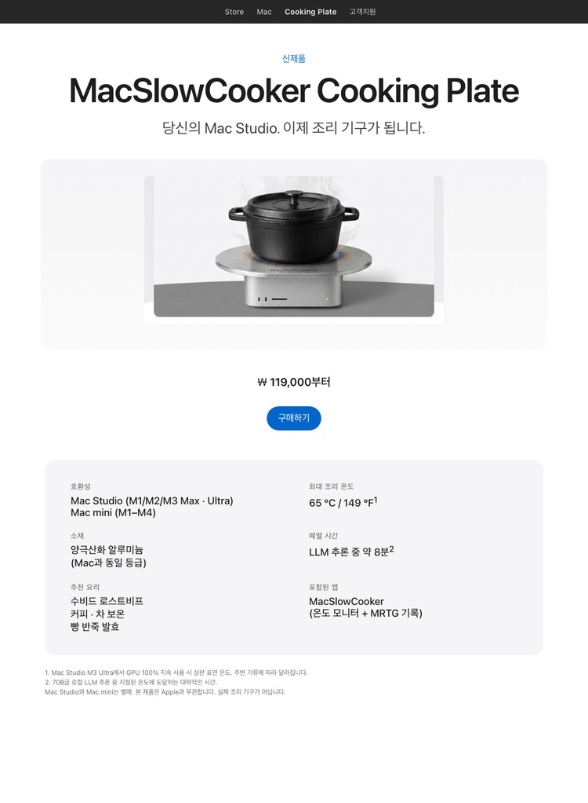
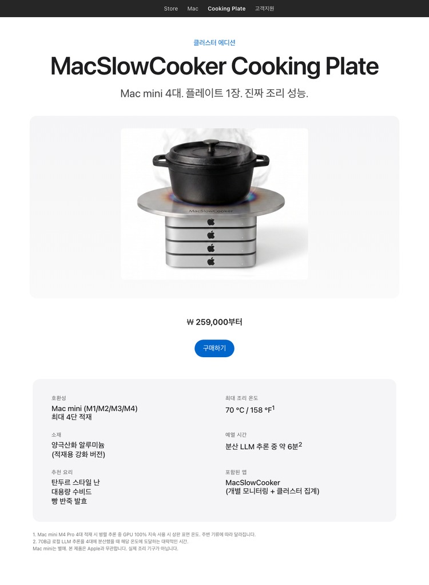
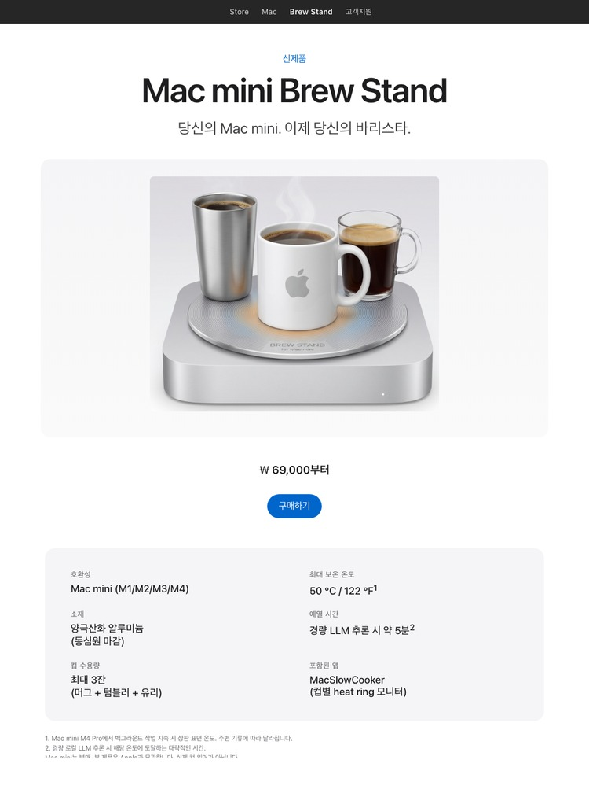
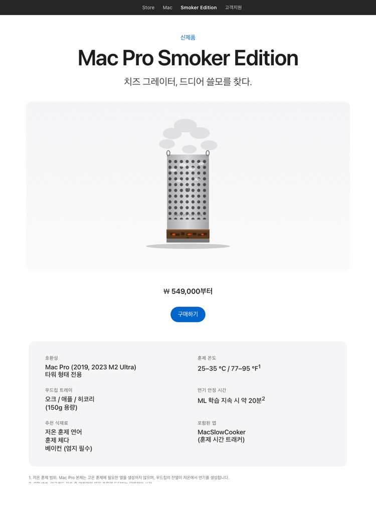
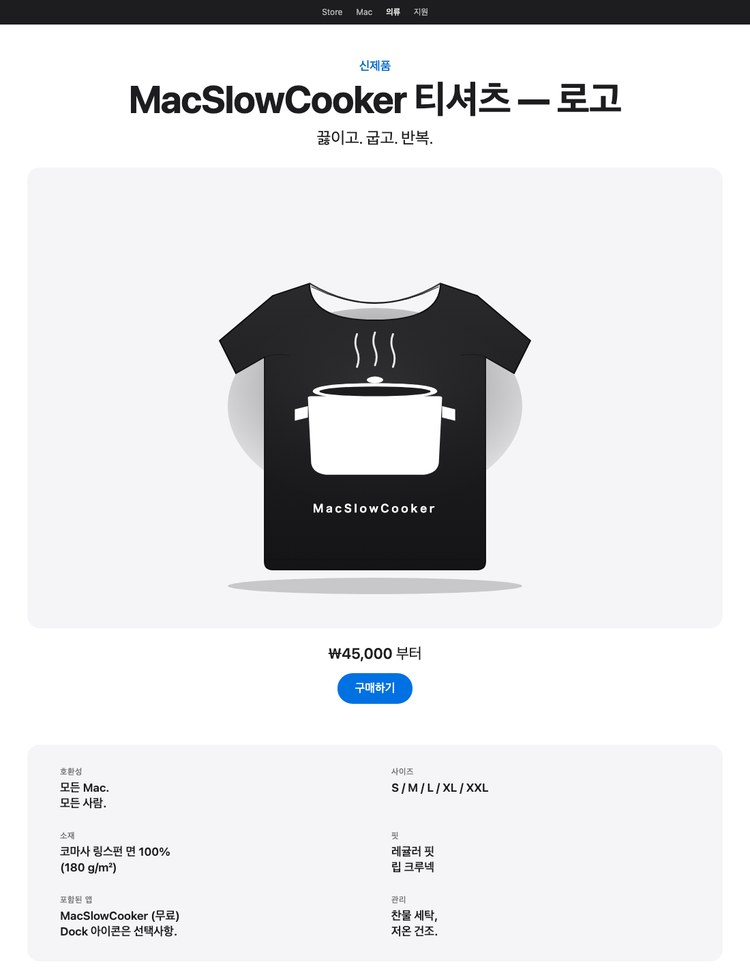
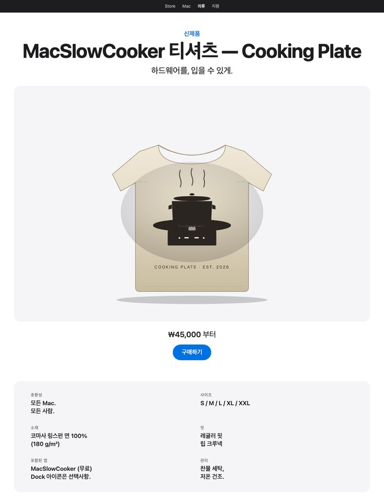

당신의 Mac Studio. 이제 조리 기구가 됩니다.


클러스터 에디션 — LLM 학습 랙용. Mac mini 4대, 플레이트 1장. 같은 패러디, 4배의 BTU.

Brew Stand — Mac mini를 당신의 바리스타로. Cooking Plate의 컵 워머 버전. 동심원 마감, 3잔 수용. 같은 패러디, 핫드링크 에디션.

Smoker Edition — 치즈 그레이터의 진짜 용도. Mac Pro 본체의 격자 구멍을 저온 훈제 굴뚝으로 재정의, 하단 우드칩 서랍이 연기 공급. 저온 훈제 연어 범위, BBQ는 무리. 실제 제품 아닙니다.

로고 티셔츠 — 최소한의 마크, 최대의 상주율. 앱의 더치오븐 아이콘을 180 gsm 블랙 티에 화이트로 실크스크린. 100% 코마사 링스펀 면. Apple과 무관합니다. 실제 조리기구가 아닙니다.

Cooking Plate 티셔츠 — 입을 수 있는 추론. Mac Studio + 더치오븐 일러스트를 내추럴 헤더 180 gsm 티에 진한 잉크로 실크스크린. 하드웨어를, 옷걸이에.
실제 macOS 앱인 MacSlowCooker를 개발하던 중 — Dock에서 GPU 사용률을 냄비로 시각화하는 앱 — Mac Studio M3 Ultra에서 로컬 LLM 추론을 돌리면 본체가 충분히 뜨거워져서 "이거 위에서 진짜 요리할 수 있는 거 아냐?"라는 농담이 반복적으로 나왔습니다.
그래서 이 컨셉 페이지가 존재합니다. 열심히 일하는 Mac의 발열을 키친 기능처럼 frame했습니다. 숫자는 실제, 제품은 가상입니다.
뜨거운 조리 도구, 액체, 열에 약한 물건을 작동 중인 컴퓨터 위에 올려놓는 것은 나쁜 생각입니다. Mac Studio의 상판은 알루미늄이지만 SoC를 열 한계 이하로 유지하려면 공기 흐름이 중요합니다. 이를 막으면 기기 수명이 단축되고 보증이 무효가 될 수 있습니다.